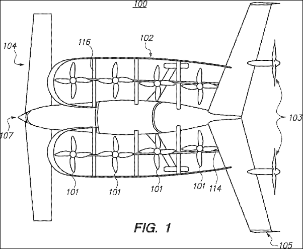

News just in from Bloomberg is that Larry Page, of Google fame, is funding not one (Zee.Aero) but two (Kitty Hawk) personalized flying-machine (dare I say flying cars?) startups. With a number of other companies pursuing the same goal, it seems a gold rush of sorts is on. Yet remember the real gold rush? The real benefactors were the pick and shovel makers. The equivalent in this flight to the future are employees with highly prized skills brought to bear on a decidedly tricky problem. And at the sharp end of those with specialized skills are...Computational Fluid Dynamics (CFD) experts - providing valuable insights into aerodynamics, propulsion, batteries, and electrical/electronics cooling.
Fig. 1 from Zee.Aero Patent Filing For A 'Personal Aircraft'Patent US20130214086


 Get our Blog feed
Get our Blog feed